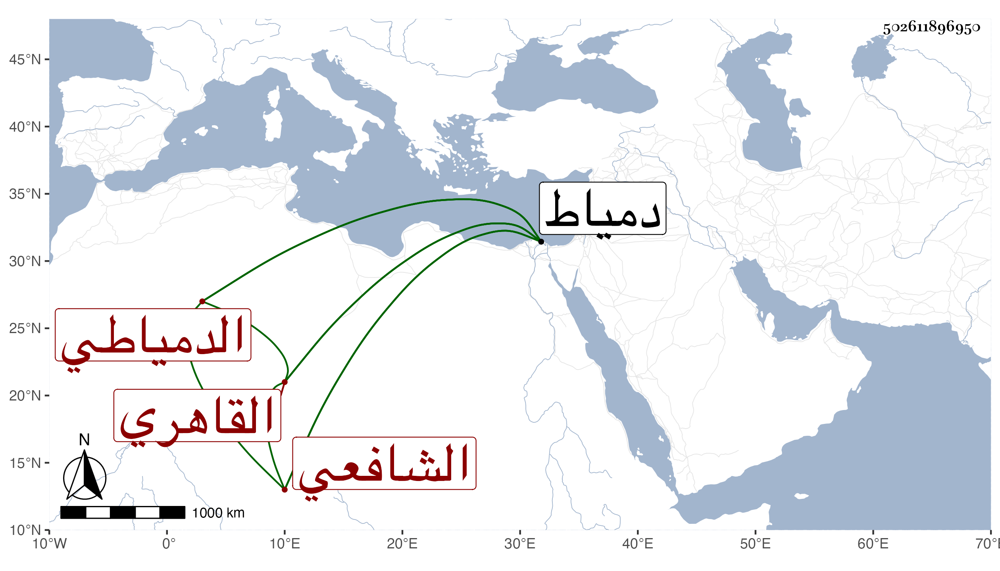

0902Sakhawi.DawLamic.ITO20230111-ara1.EIS1600.502611896950
Biography ID: 502611896950
646
محمد بن سليمان بن أحمد بن إبراهيم بن عبد الملك الشمس بن العلم القاهري الأصل الدمياطي الشافعي ويعرف بابن الفقيه سليمان وأبوه بالسنباطي . ولد سنة سبعين وسبعمائة تقريبا بدمياط وحفظ بها القرآن وصلى به وهو ابن تسع سنين وشهر ، والعمدة في أربعين يوما والمنهاج الفرعي وعرض على ناصر الدين بن الميلق وجماعة وبحث على قاضي بلده التاج عتيق وتعاني نظم الشعر من غير تقدم اشتغال له في العروض والنحو مع كون كله موزونا وعدم اللحن فيه ، لقيه ابن فهد والبقاعي في سنة ثمان وثلاثين بدمياط وكتبا عنه أشياء منها :
| إن التواضع أصل كل جميل | والعلم يوجب عز كل ذليل |
| من كثرته النفس فهو مقلل | فالنفس في القرناء شر خليل |
| والعقل أعظم نعمة تأتي الفتى | من ربه فالعقل خير دليل |
ونظم المولد النبوي وأشياء ، وكان خيرا بهيا منورا ذا سكينة ووقار . مات بدمياط في سادس عشري ذي القعدة سنة اثنتين أو ثلاث وأربعين رحمه الله .
